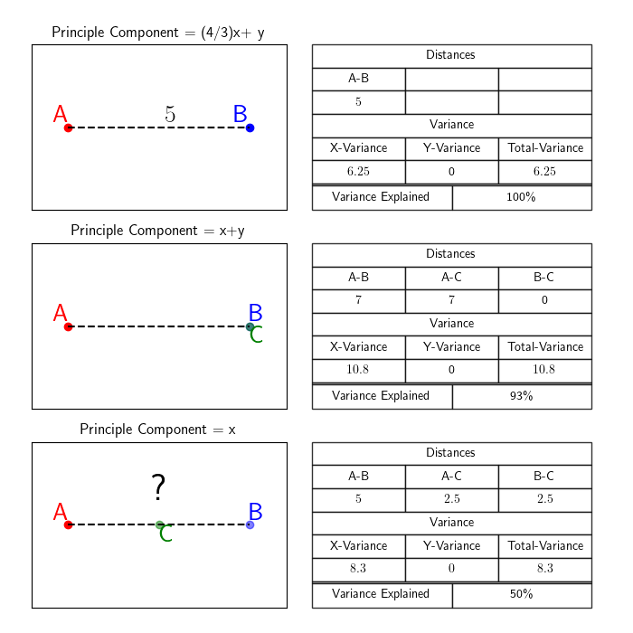
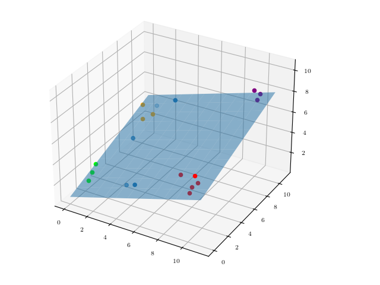

Population Genetics And Ancestry Analysis
Table of Contents
- Key Learning Outcomes
- Practical Data
- A Portability Problem
- Population Genetics Basics
- Dimensional Reduction: PCA
Key Learning Outcomes
After completing this practical, you should be able to:
- Run mixed ancestry PRS and understand the PRS Portability Problem
- Understand principle component analysis and dimensional reduction
- Understand basic population genetics and know how to analyze ancestry groups.
- Understand the challenges and limitations of applying PRS in populations with diverse genetic backgrounds.
Practical Specific Data
The multi-ancestry data/software required for this practical can be downloaded here.
Please download, unzip the data, and move it into a suitable directory on your laptop.
After doing this you should see the following directories:
- exercise1: Data/Code to run multi-ancestry PRS
- exercise2: Data/Code for principal component analysis
- exercise3: Data/Code for population genetics analysis
Ex 1: Portability Problem
The first exercise of this practical takes place in the folder exercise1. Once inside the folder you should see code and data directories. Looking in the data directory by typing the following command will reveal:
ls data/*
- 🇪🇺: EURO_GWAS.assoc (European Ancestry GWAS Sumstats)
- 🇬🇧: data/ukTarget (Genotype Phenotype data From a population from the UK.)
- 🇯🇵: data/japanTarget (Genotype Phenotype data from a population from Japan.)
To start, run PRSice using the European GWAS and target data from the UK:
./code/PRSice --base data/EURO_GWAS.assoc --target data/ukTarget/ukTarget --binary-target F --out ukRun
Verify that this command produce a file called "ukRun.best" that contains individual prs-scores in fourth column. This file can compared to the file data/ukTarget/ukTarget.pheno which contains phenotype-values in the third column.
🚨 OPTIONAL-CHALLENGE 🚨
Using R, Python, or another program, consider calculating the correlation between the PRS and phenotype data in the two files?
- First read the pseudocode and see if you can follow the strategy.
- Then give it a try or read the following solutions and make sure that you understand them.
- Notice the differences in similarities in the programming languages.
#1) Step1: Read Both Files in.
prs_data = read('ukRun.best')
pheno_data = read("data/ukTarget/ukTarget.pheno")
#2) Step2: Extract the correct Column from each file .
prs_vals = extract_from(prs_data, column 4)
pheno_vals = extract_from(pheno_data, column 3)
#3) Step3: Calculate the correlation.
R2 = calculate_R2_from_data(prs_vals, pheno_vals)
R
# read-in prs-file
prs <- read.table("ukRun.best", header = TRUE, sep = "", stringsAsFactors = FALSE)
prs.data <- prs1[,4]
# read-in pheno-file
pheno <- read.table("data/ukTarget/ukTarget.pheno", header = TRUE, sep = "", stringsAsFactors = FALSE)
pheno.data <- pheno[,3]
# Create DataFrame
combined_data <- data.frame( x = prs.data, y = pheno.data)
# Fit a linear model to the data
model <- lm(y ~ x, data = combined_data)
# Calculate the R-squared value
r_squared <- summary(model)$r.squared
# return R2
print(r_squared)
python3
# read-in prs-file:
with open('ukRun.best') as F:
prs_vals = [float(line.split()[-1]) for i,line in enumerate(F.readlines()) if i > 0]
# read-in pheno-file:
with open('data/ukTarget/ukTarget.pheno') as F:
pheno_vals = [float(line.split()[-1]) for i,line in enumerate(F.readlines()) if i > 0]
# calculate correlation
prs_mean, pheno_mean = sum(prs_vals)/len(prs_vals), sum(pheno_vals)/len(pheno_vals)
rTop = sum([(x-prs_mean)*(y-pheno_mean) for x,y in zip(prs_vals, pheno_vals)])
rBottom = (sum([(x-prs_mean)*(x-prs_mean) for x in prs_vals])**0.5) * (sum([(x-pheno_mean)*(x-pheno_mean) for x in pheno_vals])**0.5)
# Return R2
R2 = (rTop/rBottom)*(rTop/rBottom)
print(R2)
After you feel confident about the code, please run the Rscript in the code directory to calculate the correlation and create a scatterplot using the UK PRS-result:
Rscript --vanilla code/plot_prs_results.R data/ukTarget/ukTarget.pheno ukRun.best
This will create a scatterplot file called: ukRunScatterplot.pdf.
Verify that you can view it, and then type the commands below to reuse the European GWAS data and PRSice with the genotype-phenotype data from a Japan.
After viewing the resulting scatterplot please answer the questions below.
./code/PRSice --base data/EURO_GWAS.assoc --target data/japanTarget/japanTarget --binary-target F --out japanRun
Rscript --vanilla code/plot_prs_results.R data/japanTarget/japanTarget.pheno japanRun.best
❓QUESTIONS:
In the UK-result, what percent of variance in phenotype is explained by prs?
Approximately 10%.In the Japan-result, what percent of variance in phenotype is explained by prs?
Approximately 0%.Besides a difference in variance explained, do you notice any other differences?
Less variance in PRS, a shift to the left.What is the name of the problem that refers to this drop in performance?
The PRS Portability problem.What are some causes of the problem?
1. Differences in LD. 2. Differences in allele frequency. 3. Differences in environment. 4. Differences in population-structure.1000 Genomes Data
Now that you have observed the PRS-portability problem in practice we are going to consider some analysis that can be used to provide a solution. Recall from the lecture that population structure and population assignment is often accomplished using principal components analysis (PCA) and that the primary population differences that drive the portability problem are difference in allele frequency and linkage disequilibrium. In the next exercise we will learn how to analyze and compare data from different populations and quantify linkage disequilibrium. In the final exercise we what PCA is and learn how it can be used to separate population data by recent ancestry. Both of these exercises use the 1000Genomes dataset which contains individuals from 26 different source populations from all five continents.
Ex 2: Population Genetics
This exercise of this practical takes place in the folder exercise2. Once inside the folder you should see code and data directories. Looking in the data directory by typing the following command will reveal:
ls data/*
- 🌎: chr1-22.bed/bim/fam (Global Genotype Data)
- 🏷️: data/pop_info.pheno (Population specific annotation data)
- 💫: data/all_phase3.king.psam (Axillary Phase Data)
Sample Sizes
The first thing we would like to find out about this data is the number of individuals within each global superpopulation. Type the following command to query the number of European ancestry individuals in the downloaded dataset:
grep -F "EUR" data/all_phase3.king.psam | wc -l
Next, repeat the same command for East Asian, African, South Asian and Amerindian superpopulations, by inserting the relevant ancestry codes (EAS, AFR, SAS, AMR).
🗒️ Make note of how many individuals from each ancestry group are available.
Number of Genetic Variants
We do not need to use the full genome-wide data for this tutorial, only a small fraction of the 80 million total available variants. This provides a reliable approximation for the genomic analyses in this tutorial and importantly, reduces the computation time required to complete the tutorial. The following command derives the number of genetic variants on chromosomes 1 to chromosome 22 by counting the number of lines in the relevant (.bim) file, which contains a single variant per line.
wc data/chr1-22.bim -l
To quantify the number of single nucleotide polymorphisms (SNPs) we can ask plink to write a list of SNPs:
./code/plink --bfile data/chr1-22 --snps-only --write-snplist
See the output file plink.snplist, which contains a list of all the SNPs in the dataset.
Quantification of variable SNPs
The rate at which a genetic variant occurs in a population is also known as its allelic frequency. Allele frequencies are shaped by evolutionary forces over a long period of time and hence can vary. This has implications for PRS research as the allelic frequency distribution of a disease or trait may vary between populations. It is possible to generate allele frequency statistics for each SNP in a given population, using the population information in the file pop_info.pheno.
./code/plink --bfile data/chr1-22 --snps-only --freq --within data/pop_info.pheno
Population-stratified allele frequency results can be found in the output file plink.frq.strat. For each population, print the numbers of total SNPs to screen, as follows:
grep -F "AFR" plink.frq.strat | wc -l
Compare the totals against number of SNPs which have minor allele frequencies greater than 0 (and hence are useful for statistical analysis). Do this for all 5 populations (EAS, EUR, SAS, EUR and AFR), using the code given below:
grep -F "AFR" plink.frq.strat > freq_report.afr
grep -F "AMR" plink.frq.strat > freq_report.amr
grep -F "EUR" plink.frq.strat > freq_report.eur
grep -F "EAS" plink.frq.strat > freq_report.eas
grep -F "SAS" plink.frq.strat > freq_report.sas
grep -F "AFR" plink.frq.strat | awk '$6 >0' freq_report.afr | wc -l
grep -F "EUR" plink.frq.strat | awk '$6 >0' freq_report.eur | wc -l
grep -F "EAS" plink.frq.strat | awk '$6 >0' freq_report.eas | wc -l
grep -F "AMR" plink.frq.strat | awk '$6 >0' freq_report.amr | wc -l
grep -F "SAS" plink.frq.strat | awk '$6 >0' freq_report.sas | wc -l
Having compared the number of SNPs that show variation in each population, answer the following questions:
❓QUESTIONS:
Which populations have the largest number (density) of SNPs that can be considered polymorphic?
AFR and AMR.What do you think is the significance of the observed population order?
Human evolution and migration.Investigation Missingness
Genotype missingness, caused by genotyping failure can potentially lead to biased allele frequency estimation. Therefore missingness needs to be excluded as a possible source of bias when calculating allele frequency differences.
./code/plink --bfile data/chr1-22 --missing --within data/pop_info.pheno
The output file plink.lmiss provides a variant-based missing data report). Use the following code to query the number of genotyping failures based on the missingness information in the NMISS column:
awk '$4 > 0' plink.lmiss | wc -l
Cross Population Allele Frequency Comparisons
Here we compare profiles of allele frequency across the five ancestral populations. To do this we will use the previously-generated output on minor allele frequencies per ancestry group (the file "plink.frq.strat"), using R:
R-Code: Compare Allele Frequencies
library(dplyr)
library(ggplot2)
freq <-read.table("plink.frq.strat", header =T)
plotDat <- freq %>%
mutate(AlleleFrequency = cut(MAF, seq(0, 1, 0.25))) %>%
group_by(AlleleFrequency, CLST) %>%
summarise(FractionOfSNPs = n()/nrow(freq) * 100)
ggplot(na.omit(plotDat),aes(AlleleFrequency, FractionOfSNPs, group = CLST, col = CLST)) +
geom_line() + scale_y_continuous(limits = c(0, 12)) + ggtitle("Distribution of allele frequency across genome")
❓QUESTIONS:
How are the allele frequencies in AFR distinguishable from the other global reference groups?
Greater diversity.Linkage disequilibrium versus genomic distance, across populations
We will now perform pairwise LD comparisons between genome-wide snps in order to show cross-populations relationships between genomic distance and LD strength. We derive information on pairwise R2 between all SNPs:
./code/plink --bfile data/chr1-22 --keep-cluster-names AFR --within data/pop_info.pheno --r2 --ld-window-r2 0 --ld-window 999999 --ld-window-kb 2500 --threads 30 --out chr1-22.AFR
Repeat this step for all five 1000Genomes populations. Output files containing LD info for all pairwise SNPs, have a ‘.ld’ suffix Next, create a summary file containing the base-pair distance between each pair and the corresponding r2 value. The following example shows this for AFR and EUR populations only, as just these populations will be used in the plot.
cat chr1-22.AFR.ld | sed 1,1d | awk -F " " 'function abs(v) {return v < 0 ? -v : v}BEGIN{OFS="\t"}{print abs($5-$2),$7}' | sort -k1,1n > chr1-22.AFR.ld.summary
cat chr1-22.EUR.ld | sed 1,1d | awk -F " " 'function abs(v) {return v < 0 ? -v : v}BEGIN{OFS="\t"}{print abs($5-$2),$7}' | sort -k1,1n > chr1-22.EUR.ld.summary
LD decay versus chromosomal distance
To visualise LD behaviour as a function of chromosomal distance we can carry out the following commands from within an R terminal:
R-Code: Visualize LD Behavior
# need to add additional functionality to be able to
# carry out the necessary data transformation (dplyr)
# and manipulation of character strings (stringr )
install.packages("dplyr")
install.packages("stringr")
install.packages("ggplot2")
library(dplyr)
library(stringr)
library(ggplot2)
# Next we will (1) load the previously generated information on pairwise LD,
# Categorize distances into intervals of fixed length (100KB),
# Compute mean and median r2 within blocks
# Obrain mid-points for each distance interval
dfr<-read.delim("chr1-22.AFR.ld.summary",sep="",header=F,check.names=F, stringsAsFactors=F)
colnames(dfr)<-c("dist","rsq")
dfr$distc<-cut(dfr$dist,breaks=seq(from=min(dfr$dist)-1,to=max(dfr$dist)+1,by=100000))
dfr1<-dfr %>% group_by(distc) %>% summarise(mean=mean(rsq),median=median(rsq))
dfr1 <- dfr1 %>% mutate(start=as.integer(str_extract(str_replace_all(distc,"[\\(\\)\\[\\]]",""),"^[0-9-e+.]+")),
end=as.integer(str_extract(str_replace_all(distc,"[\\(\\)\\[\\]]",""),"[0-9-e+.]+$")),
mid=start+((end-start)/2))
# The preceding code block should be repeated for the file chr1-22._EUR.ld.summary.
# When doing so, the output object dfr1 on lines 4 and 5 should be renamed dfr2 to prevent the object df1 being over-written.
# Finally, we can plot LD decay for AFR and EUR reference populations in a single graph:
ggplot()+
geom_point(data=dfr1,aes(x=start,y=mean),size=0.4,colour="grey20")+
geom_line(data=dfr1,aes(x=start,y=mean),size=0.3,alpha=0.5,colour="grey40")+
labs(x="Distance (Megabases)",y=expression(LD~(r^{2})))+
scale_x_continuous(breaks=c(0,2*10^6,4*10^6,6*10^6,8*10^6),labels=c("0","2","4","6","8"))+
theme_bw()
❓QUESTIONS:
What differences do you observe in terms of LD decay between AFR and EUR genomes?
Greater decay in AFRHow is this likely to impact the transferability of PRS performance between the two populations?
Negatively.Distribution of LD-block length
The next set of scripts will allow us to visualise the distribution of LD block length across different 1000Genomes populations.
./code/plink --bfile chr1-22 --keep-cluster-names AFR --blocks no-pheno-req no-small-max-span --blocks-max-kb 250 --within data/pop_info.pheno --threads 30 --out AFR
The “–block" flag estimates haplotype blocks using the same block definition implemented by the software Haploview. The default setting for the flag --blocks-max-kb only considers pairs of variants that are within 200 kilobases of each other. The output file from the above command is a .blocks file. Use the same code to generate output for EUR, EAS, SAS and AMR populations (as it is not possible to generate population-specific information using the --within flag). Then, in R:
R-Code: Load each of the 5 datasets and set column names to lower case.
dfr.afr <- read.delim("AFR.blocks.det",sep="",header=T,check.names=F,stringsAsFactors=F)
colnames(dfr.afr) <- tolower(colnames(dfr.afr))
dfr.eur <- read.delim("EUR.blocks.det",sep="",header=T,check.names=F,stringsAsFactors=F)
colnames(dfr.eur) <- tolower(colnames(dfr.eur))
dfr.amr <- read.delim("AMR.blocks.det",sep="",header=T,check.names=F,stringsAsFactors=F)
colnames(dfr.amr) <- tolower(colnames(dfr.amr))
dfr.sas <- read.delim("SAS.blocks.det",sep="",header=T,check.names=F,stringsAsFactors=F)
colnames(dfr.sas) <- tolower(colnames(dfr.sas))
dfr.eas <- read.delim("EAS.blocks.det",sep="",header=T,check.names=F,stringsAsFactors=F)
colnames(dfr.eas) <- tolower(colnames(dfr.eas))
Then plot the data:
plot (density(dfr.afr$kb), main="LD block length distribution", ylab="Density",xlab="LD block length (Kb)" )
lines (density(dfr.eur$kb), col="blue")
lines (density(dfr.eas$kb), col="red")
lines (density(dfr.amr$kb), col="purple")
lines (density(dfr.sas$kb), col="green")
legend("topright",c("AFR","EAS","EUR","SAS","AMR"),
fill=c("black","red","blue","green","purple"))
❓QUESTIONS:
What are the main features of this plot? How do you interpret them?
Open endedEx 3: PCA
Principle Component Analysis is a useful technique that allows researchers to visualize high dimensional data in lower space by rotating the axes in such a way that the lower dimensions (or components) maximize the total variance explained. In statistical genetics this involves "rotating" million-dimensional data - something that is very hard to visualize! For this reason, we begin with a simpler exercise. For the following three two dimensional shapes, spend some time identifying the principle components or sketching the line across for which variance is maximized. Check your answers below:

❓QUESTIONS:
What line represents the principle component for the first shape?
The line 4/3(x) + yWhat line represents the principle component for the second shape?
The line x+y.What line represents the principle component for the third shape?
The X and Y axis already maximize the variance.Below you can view the shapes in principal component space.

Now that we understand how PCA works in two dimensions we will consider a higher dimensional example. In the three dimensional space below, see if you can visualize a plane that maximizes the variance across two dimensions:

Did you get it right? If so, realize that this is equivalent to what we do in genetics - we find rotate the data through millions of dimensions of space to find the plane that maximizes the variance in two dimensions:

To run PCA with real data please enter the exercise2 directory, and type the following command to run PCA on the 1000 Genome data:
plink --bfile data/chr1-22 --indep-pairwise 250 25 0.1 --maf 0.1 --threads 30 --out chr1-22.ldpruned_all_1kgv2
plink --bfile data/chr1-22 --extract chr1-22.ldpruned_all_1kgv2.prune.in --pca --threads 30
This will generate the principal components that maximize the variance in the data. To plot the result run the following commands from with an R-terminal:
R-Code: Generate a PCA Plot
require('RColorBrewer')
options(scipen=100, digits=3)
eigenvec <- read.table('plink.eigenvec', header = F, skip=0, sep = ' ')
rownames(eigenvec) <- eigenvec[,2]
eigenvec <- eigenvec[,3:ncol(eigenvec)]
colnames(eigenvec) <- paste('Principal Component ', c(1:20), sep = '')
PED <- read.table("data/all_phase3.king.psam", header = TRUE, skip = 0, sep = '\t')
PED <- PED[which(PED$IID %in% rownames(eigenvec)), ]
PED <- PED[match(rownames(eigenvec), PED$IID),]
PED$Population <- factor(PED$Population, levels=c("ACB","ASW","ESN","GWD","LWK","MSL","YRI","CLM","MXL","PEL","PUR","CDX","CHB","CHS","JPT","KHV","CEU","FIN","GBR","IBS","TSI","BEB","GIH","ITU","PJL","STU"))
col <- colorRampPalette(c("yellow","yellow","yellow","yellow","yellow","yellow","yellow","forestgreen","forestgreen","forestgreen","forestgreen","grey","grey","grey","grey","grey",
"royalblue","royalblue","royalblue","royalblue","royalblue","black","black","black","black","black"))(length(unique(PED$Population)))[factor(PED$Population)]
project.pca <- eigenvec
par(mar = c(5,5,5,5), cex = 2.0,cex.main = 7, cex.axis = 2.75, cex.lab = 2.75, mfrow = c(1,2))
plot(project.pca[,1], project.pca[,2],
type = 'n',
main = 'A',
adj = 0.5,
xlab = 'First component',
ylab = 'Second component',
font = 2,
font.lab = 2)
points(project.pca[,1], project.pca[,2], col = col, pch = 20, cex = 2.25)
legend('bottomright',
bty = 'n',
cex = 3.0,
title = '',
c('AFR', 'AMR', 'EAS',
'EUR', 'SAS'),
fill = c('yellow', 'forestgreen', 'grey', 'royalblue', 'black'))
plot(project.pca[,1], project.pca[,3],
type="n",
main="B",
adj=0.5,
xlab="First component",
ylab="Third component",
font=2,
font.lab=2)
points(project.pca[,1], project.pca[,3], col=col, pch=20, cex=2.25)
❓QUESTIONS: